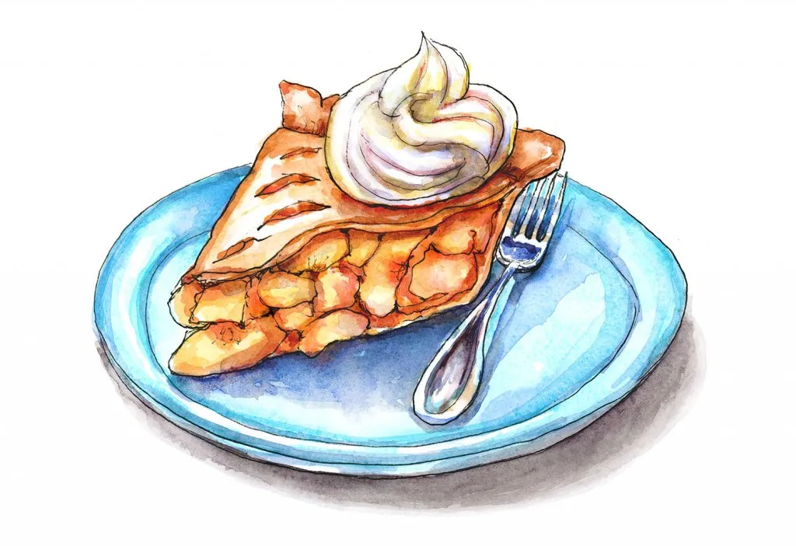

Recipe for a delicious Peach Pie

Chef John's famous peach pie recipe, a true classic.
This peach pie is above and beyond beautiful. The lattice design is also very practical. When making pie with something like peaches, the relatively open top allows lots of moisture to evaporate, which helps prevent the dreaded watery pie syndrome. That's also why we boil the excess juices into syrup.
Ingredients
- 3 punds fresh freestone peaches, peeled and sliced
- 1 cup white sugar
- 1 pinch salt
- 0.25 cup all-purpose flour
- 1 tbsp cornstarch
- 1 tsp lemon juice
- 1 pinch cayenne pepper
- 1 pinch ground cinnamon
- 1 14.1oz package double-crust pie pastry, thawed
- 1.5 tbsp butter
- 1 tbsp heavy whipping cream
- 1 tsbp white sugar
Directions
- Preheat ovent to 350F
- Stir together peaches, 0.5c sugar, and salt in large bowl. Let sit for 30 minutes. Strain juices into saucepan and return rest to bowl
- Boil juices in saucepan, until mixture thickens into a syrup.
- Whisk 0.5c sugar, flour, and cornstarch into a bowl. Sitr lemon juice, cayenne, and cinnamon into peaches. Sprinkle with flour and toss to coat. Pour hot syrup over peach mixture and stir.
- Roll out 1 pastry into 12in circle. Press into bottom of 10in pie plate. Pour peach filling into crust, dot with butter.
- Roll out remaning pastry into 11in circle and cut into 1in strips.
- Lay 5 strips evenly over top of pie. Weave remaining strips to form lattice top.
- Bake in oven until crust is browned and filling is bubbly. About 75 minutes. Cool completely before slicing.